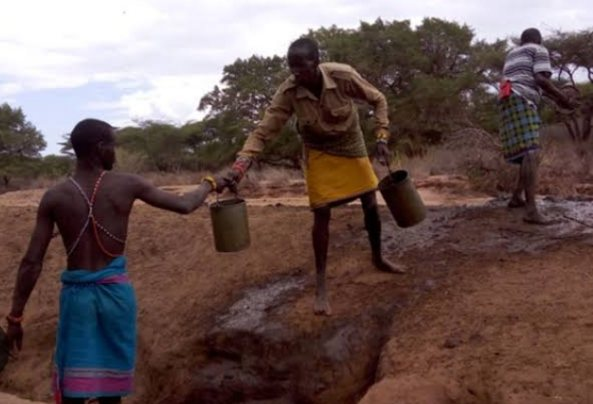

Environment & Energy
Climate Change Is Changing Our Water: The Science Behind Kenya’s Water Crisis
When the rains fail, everyday life becomes a struggle
Water is something many people only think about when it becomes unavailable.
For a household with a reliable water supply, turning on a tap is an ordinary activity. But in parts of Kenya, particularly drought-prone communities, accessing clean water can mean walking long distances, waiting in queues or spending money that would otherwise support other household needs. Kenya's changing climate is making water security an increasingly important national conversation.
Climate change is associated with rising temperatures and changes in rainfall patterns. These changes influence evaporation, soil moisture, river flows, groundwater recharge and agricultural production. The result is that some communities experience prolonged dry conditions, while others face destructive floods.
According to the Kenya Meteorological Department's State of the Climate in Kenya 2025 report, the country's average temperature has increased by approximately 0.88°C since 1960. The report also highlights increasingly unpredictable rainfall patterns and the effects of extreme weather on agriculture, water resources and livelihoods.
These changes matter because water systems depend on relatively predictable environmental conditions. During prolonged droughts, rivers and water reservoirs can experience reduced water levels, crops fail and livestock struggle to find drinking water.
On the other hand, heavy rainfall can cause flooding, damage water infrastructure and contaminate water sources through runoff carrying sewage, waste and other pollutants.

This creates a difficult situation: communities can experience water shortages and water contamination within the same country.The effects of water scarcity extend beyond thirst. Women and children in some communities spend significant amounts of time searching for water, reducing the time available for education, income-generating activities and other responsibilities. Farmers face reduced harvests, livestock keepers experience animal losses, and families may struggle to afford food as agricultural production declines.
In January 2026, WHO reported that more than two million people in Kenya were facing worsening food insecurity following a particularly poor October–December 2025 rainy season. The agency linked the drought to malnutrition risks, disease outbreaks and disrupted access to essential health services. Climate scientists explain that climate change affects the entire water cycle, making water planning and management increasingly important.
The Kenya Meteorological Department's climate assessments demonstrate why early-warning systems, reliable rainfall information and climate adaptation are essential. Water conservation, protection of forests and water catchment areas, investment in water storage and improved drainage systems can help communities become more resilient.
“Changing rainfall patterns are causing prolonged droughts and unpredictable floods, making it difficult for communities to access reliable and safe water. To secure water for the future, communities should embrace rainwater harvesting, protect water catchment areas, plant trees and adopt sustainable water management practices," Kelvin Nato, environmental advocate.